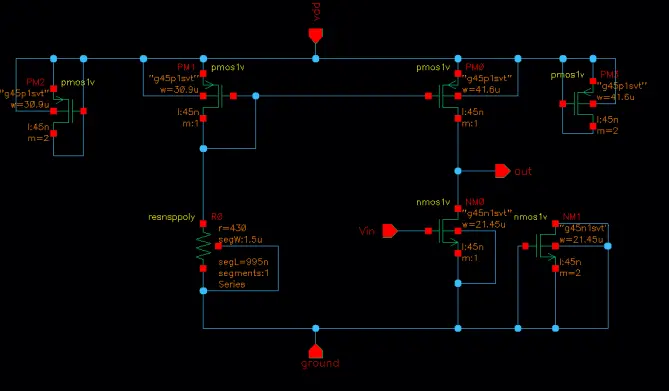
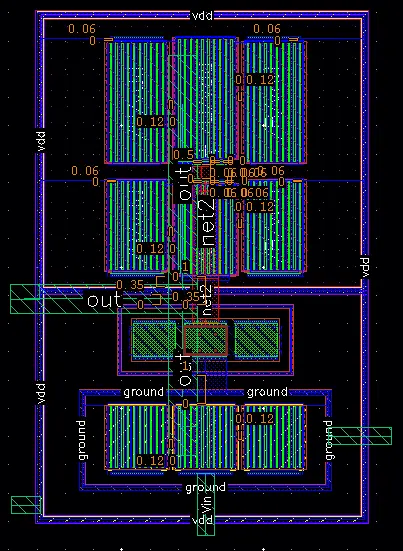
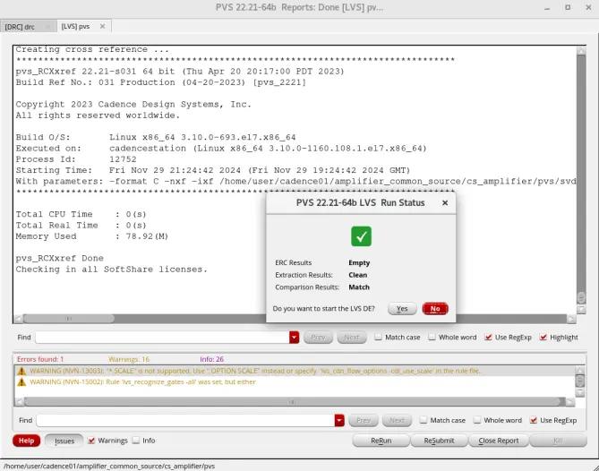
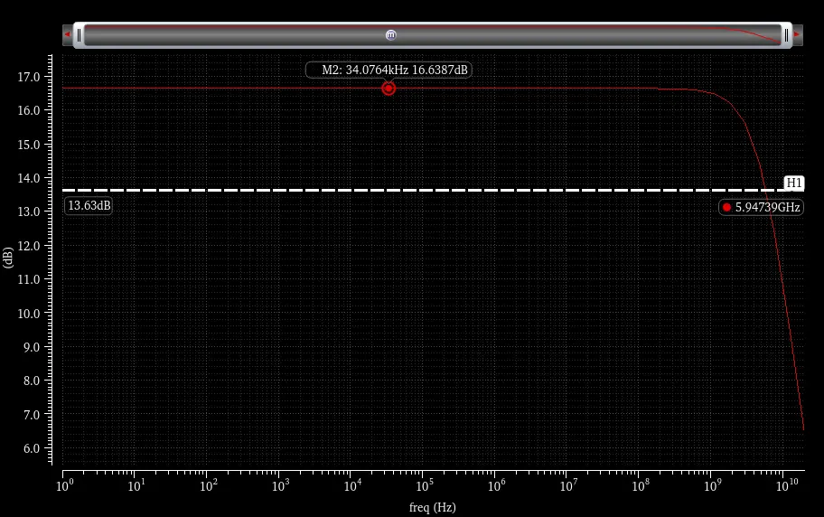
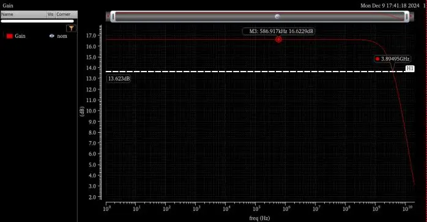
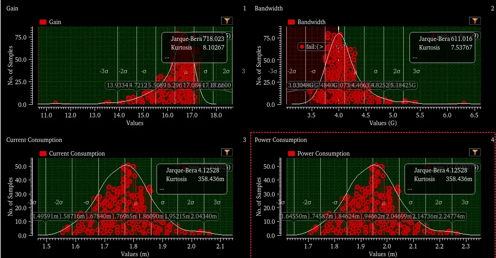

Design, Layout and Post-Layout Verification of a 45 nm Common-Source Amplifier
The task was to design an NMOS/PMOS common-source amplifier in a 45 nm PDK that meets a fixed specification, then take it through the flow a real analog block goes through: device characterization, corner and statistical verification, layout, physical verification, parasitic extraction and post-layout sign-off.
Design and pre-layout verification
- Characterized the NMOS and PMOS separately with DC sweeps to extract VTH, VA, λ, k′ and gm, then sized the devices. The NMOS is W/L = 21.6 µm / 45 nm (10 fingers) biased at VGS = 650 mV for ID ≈ 1.04 mA (Vov ≈ 59 mV, gm ≈ 35 mS). The PMOS is widened to 41.6 µm to compensate for lower hole mobility.
- Ran transient, DC and AC analyses (mid-band gain 16.6 dB, −3 dB frequency ≈ 6 GHz), then swept process corners (tt, ff, ss, fs, sf, Monte Carlo) × supply (0.95–1.10 V) × temperature (10–75 °C) in ADE Assembler. Almost every point passes; a few skewed-corner points land within 10 % of a limit.
- Monte Carlo (200 samples): 100 % yield on gain, bandwidth, current and power.
- Reliability: an aging simulation over a 3-year lifetime (HCI, NBTI, PBTI, plus self-heating) still meets every specification. The PMOS self-heating rise was about 4.5 °C.
Layout and physical verification
- Built the layout with multi-finger devices and added six dummy transistors and two dummy resistors around the active devices for matching. Drain connections use Metal 1–3 via stacks and an M3 route to the output pin.
- Cleared DRC and LVS (the layout matches the schematic).
- Electromigration and IR drop (EMIR). Cadence EAD flagged violations on the signal nets, where J/Jmax ≥ 1 is a violation: 1.50 on
net2and 11.18 on the output. I widened the metal (net2 from 0.3 to 0.9 µm, output paths from 0.08 to 1.02 µm) and added via rows. J/Jmax dropped to 0.61 and 0.85, and the worst IR drop fell from 387 µV to 178 µV on net2 and from 8.7 mV to 1.0 mV on the output. Flags on the supply rails were left outstanding in this iteration.
Post-layout results (parasitic extraction)
Re-running the same sweeps with extracted parasitics shows what layout costs. Gain, current and power are essentially unchanged, but bandwidth falls by about 35 %.
Specification
- Supply
- 1.1 V
- Load
- 100 kΩ
- Voltage gain
- ≥ 7.5 dB
- Bandwidth
- ≥ 4 GHz
- Power
- ≤ 2.75 mW
- Current
- ≤ 2.5 mA
- Temperature
- 10–75 °C
Tools
Cadence VirtuosoSpectreADE AssemblerPVS (DRC/LVS)EAD (EMIR)Quantus (PEX)45 nm PDK
| Metric | Spec | Pre-layout | Post-layout |
|---|---|---|---|
| Voltage gain | ≥ 7.5 dB | 16.64 dB | 16.62 dB |
| Bandwidth (−3 dB) | ≥ 4 GHz | 6.02 GHz | 3.93 GHz |
| Supply current | ≤ 2.5 mA | 1.82 mA | 1.74 mA |
| Power | ≤ 2.75 mW | 2.00 mW | 1.91 mW |
| Monte Carlo yield | all specs | 100 % | 100 % (gain, current, power); 57.5 % (bandwidth) |
Takeaway. The nominal post-layout bandwidth misses the 4 GHz target by under 2 %, but 42.5 % of Monte Carlo samples fall below it, and at the slow process corner all 16 supply/temperature points come in at 2.5–2.8 GHz while gain, current and power still pass. The EM fix contributes: widening the output metal roughly doubled that net's extracted capacitance (2.14 → 4.31 fF). The report's conclusion is that optimizing placement and routing is the lever; the next iteration would trade metal width against capacitance using the actual J/Jmax margin.





